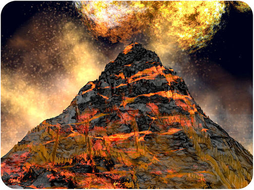
What alien planet is represented by this picture? Would it surprise you to learn that the picture represents Earth? After Earth first formed about 4.6 billion years ago, it may well have looked like this. Instead of rivers of water, rivers of molten rock flowed over its surface. Life as we know it could not have survived in such a place. How did this fiery hot planet become today’s Earth, covered with water and teeming with life? The long and incredible story of Earth’s history is told in this chapter.
Earth formed 4.6 billion years ago, and life first appeared about 4 billion years ago. The first life forms were microscopic, single-celled organisms. From these simple beginnings, evolution gradually produced the vast complexity and diversity of life today. The evolution of life on Earth wasn’t always smooth and steady—far from it. Living things had to cope with some astounding changes. Giant meteorites struck Earth’s surface. Continents drifted and shifted. Ice ages buried the planet in snow and ice for millions of years at a time. At least five times, many, if not most, of Earth’s living things went extinct. Extinction occurs when a species completely dies out and no members of the species remain. But life on Earth was persistent. Each time, it came back more numerous and diverse than before.
It’s hard to grasp the vast amounts of time since Earth formed and life first appeared on its surface. It may help to think of Earth’s history as a 24-hour day, as shown in Figure below . Humans would have appeared only during the last minute of that day. If we are such newcomers on planet Earth, how do we know about the vast period of time that went before us? How have we learned about the distant past?
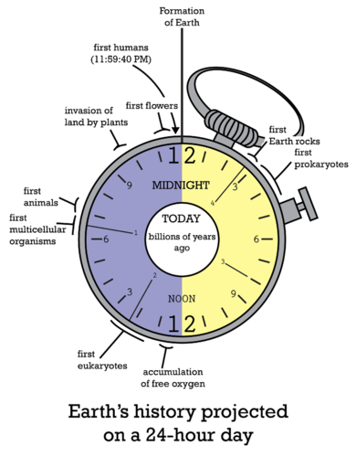
History of Earth in a Day. In this model of Earth’s history, the planet formed at midnight. What time was it when the first prokaryotes evolved?
Much of what we know about the history of life on Earth is based on the fossil record. Detailed knowledge of modern organisms also helps us understand how life evolved.
Fossils are the preserved remains or traces of organisms that lived in the past. The soft parts of organisms almost always decompose quickly after death. On occasion, the hard parts—mainly bones, teeth, or shells—remain long enough to mineralize and form fossils. An example of a complete fossil skeleton is shown in Figure below . The fossil record is the record of life that unfolded over four billion years and pieced back together through the analysis of fossils.
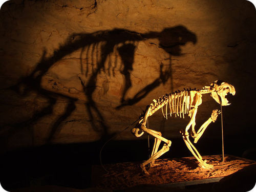
Extinct Lion Fossil. This fossilized skeleton represents an extinct lion species. It is rare for fossils to be so complete and well preserved as this one.
To be preserved as fossils, remains must be covered quickly by sediments or preserved in some other way. For example, they may be frozen in glaciers or trapped in tree resin, like the frog in Figure below . Sometimes traces of organisms—such as footprints or burrows—are preserved (see the fossil footprints in Figure below ). The conditions required for fossils to form rarely occur. Therefore, the chance of an organism being preserved as a fossil is very low. You can watch a video at the following link to see in more detail how fossils form: http://www.youtube.com/watch?v=A5i5Qrp6sJU .
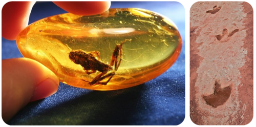
The photo on the left shows an ancient frog trapped in hardened tree resin, or amber. The photo on the right shows the fossil footprints of a dinosaur.
In order for fossils to “tell” us the story of life, they must be dated. Then they can help scientists reconstruct how life changed over time. Fossils can be dated in two different ways: relative dating and absolute dating. Both are described below. You can also learn more about dating methods in the video at this link: http://www.youtube.com/watch?v=jM7vZ-9bBc0 .
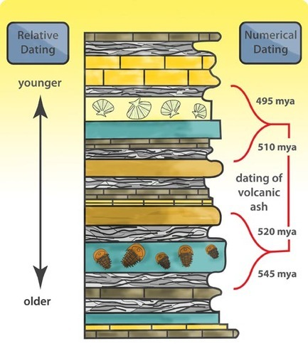
Relative Dating Using Rock Layers. Relative dating establishes which of two fossils is older than the other. It is based on the rock layers in which the fossils formed.
Evidence from the fossil record can be combined with data from molecular clocks. A molecular clock uses DNA sequences (or the proteins they encode) to estimate how long it has been since related species diverged from a common ancestor. Molecular clocks are based on the assumption that mutations accumulate through time at a steady average rate for a given region of DNA. Species that have accumulated greater differences in their DNA sequences are assumed to have diverged from their common ancestor in the more distant past. Molecular clocks based on different regions of DNA may be used together for more accuracy. Consider the example in Table below . The table shows how similar the DNA of several animal species is to human DNA. Based on these data, which organism do you think shared the most recent common ancestor with humans?
| Organism | Similarity with Human DNA (percent) |
|---|---|
| Chimpanzee | 98 |
| Mouse | 85 |
| Chicken | 60 |
| Fruit Fly | 44 |
Another tool for understanding the history of Earth and its life is the geologic time scale , shown in Figure below . The geologic time scale divides Earth’s history into divisions (such as eons, eras, and periods) that are based on major changes in geology, climate, and the evolution of life. It organizes Earth’s history and the evolution of life on the basis of important events instead of time alone. It also allows more focus to be placed on recent events, about which we know the most.
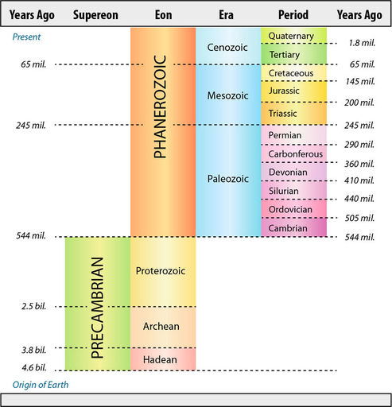
Geologic Time Scale. The geologic time scale divides Earth’s history into units that reflect major changes in Earth and its life forms. During which eon did Earth form? What is the present era?
We’ll start the story of life at the very beginning, when Earth and the rest of the solar system first formed. The solar system began as a rotating cloud of stardust. Then, a nearby star exploded and sent a shock wave through the dust cloud, increasing its rate of spin. As a result, most of the mass became concentrated in the middle of the disk, forming the sun. Smaller concentrations of mass rotating around the center formed the planets, including Earth. You can watch a video showing how Earth formed at this link: http://www.youtube.com/watch?v=-x8-KMR0nx8&feature=related . At first, Earth was molten and lacked an atmosphere and oceans. Gradually, the planet cooled and formed a solid crust. As the planet continued to cool, volcanoes released gases, which eventually formed an atmosphere. The early atmosphere contained ammonia, methane, water vapor, and carbon dioxide but only a trace of oxygen. As the atmosphere became denser, clouds formed and rain fell. Water from rain (and perhaps also from comets and asteroids that stuck Earth) eventually formed the oceans. The ancient atmosphere and oceans represented by the picture in Figure below would be toxic to today’s life, but they set the stage for life to begin.
Ancient Earth. This is how ancient Earth may have looked after its atmosphere and oceans formed.
All living things consist of organic molecules. Therefore, it is likely that organic molecules evolved before cells, perhaps as long as 4 billion years ago. How did these building blocks of life first form? Scientists think that lightning sparked chemical reactions in Earth’s early atmosphere. They hypothesize that this created a “soup” of organic molecules from inorganic chemicals. In 1953, scientists Stanley Miller and Harold Urey used their imaginations to test this hypothesis. They created a simulation experiment to see if organic molecules could arise in this way (see Figure below ). They used a mixture of gases to represent Earth’s early atmosphere. Then, they passed sparks through the gases to represent lightning. Within a week, several simple organic molecules had formed. You can watch a dramatization of Miller and Urey’s experiment at this link: http://www.youtube.com/watch?v=j9ZRHoawyOg .
Miller and Urey’s Experiment. Miller and Urey demonstrated that organic molecules could form under simulated conditions on early Earth. What assumptions were their simulation based upon?
Recently, the findings of Miller and Urey have come into question due to discrepancies in the composition of the early atmosphere, allowing a number of other ideas to surface on the formation of the first organic molecules. One idea states that the active volcanoes on early Earth gave the necessary materials for life. Despite the simplified account discussed above, the problem of the origin of the first organic compounds remains. Despite tremendous advances in biochemical analysis, answers to the problem remain. But whatever process did result in the first organic molecules, it was probably a spontaneous process, with elements coming together randomly to form small compounds, and small compounds reacting with other elements and other small compounds to make larger compounds. So, which organic molecule did come first?
Living things need organic molecules to store genetic information and to carry out the chemical work of cells. Modern organisms use DNA to store genetic information and proteins to catalyze chemical reactions. So, did DNA or proteins evolve first? This is like asking whether the chicken or the egg came first. DNA encodes proteins and proteins are needed to make DNA, so each type of organic molecule needs the other for its own existence. How could either of these two molecules have evolved before the other? Did some other organic molecule evolve first, instead of DNA or proteins?
Some scientists speculate that RNA may have been the first organic molecule to evolve. In fact, they think that early life was based solely on RNA and that DNA and proteins evolved later. This is called the RNA world hypothesis. Why RNA? It can encode genetic instructions (like DNA), and some RNAs can carry out chemical reactions (like proteins). Therefore, it solves the chicken-and-egg problem of which of these two molecules came first. Other evidence also suggests that RNA may be the most ancient of the organic molecules. You can learn more about the RNA world hypothesis and the evidence for it at this link: http://www.youtube.com/watch?v=sAkgb3yNgqg .
How organic molecules such as RNA developed into cells is not known for certain. Scientists speculate that lipid membranes grew around the organic molecules. The membranes prevented the molecules from reacting with other molecules, so they did not form new compounds. In this way, the organic molecules persisted, and the first cells may have formed. Figure below shows a model of the hypothetical first cell.
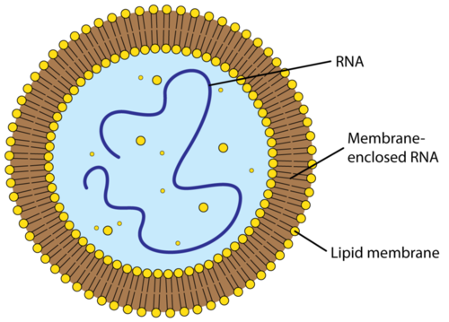
Hypothetical First Cell. The earliest cells may have consisted of little more than RNA inside a lipid membrane.
No doubt there were many early cells of this type. However, scientists think that only one early cell (or group of cells) eventually gave rise to all subsequent life on Earth. That one cell is called the Last Universal Common Ancestor (LUCA). It probably existed around 3.5 billion years ago. LUCA was one of the earliest prokaryotic cells. It would have lacked a nucleus and other membrane-bound organelles. To learn more about LUCA and universal common descent, you can watch the video at the following link: http://www.youtube.com/watch?v=G0UGpcea8Zg .
The earliest cells were probably heterotrophs. Most likely they got their energy from other molecules in the organic “soup.” However, by about 3 billion years ago, a new way of obtaining energy evolved. This new way was photosynthesis. Through photosynthesis, organisms could use sunlight to make food from carbon dioxide and water. These organisms were the first autotrophs. They provided food for themselves and for other organisms that began to consume them. After photosynthesis evolved, oxygen started to accumulate in the atmosphere. This has been dubbed the “oxygen catastrophe.” Why? Oxygen was toxic to most early cells because they had evolved in its absence. As a result, many of them died out. The few that survived evolved a new way to take advantage of the oxygen. This second major innovation was cellular respiration. It allowed cells to use oxygen to obtain more energy from organic molecules.
The first eukaryotic cells probably evolved about 2 billion years ago. This is explained by endosymbiotic theory. As shown in Figure below , endosymbiosis came about when large cells engulfed small cells. The small cells were not digested by the large cells. Instead, they lived within the large cells and evolved into cell organelles.
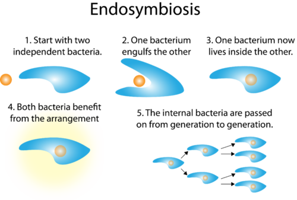
From Independent Cell to Organelle. The endosymbiotic theory explains how eukaryotic cells evolved.
The large and small cells formed a symbiotic relationship in which both cells benefited. Some of the small cells were able to break down the large cell’s wastes for energy. They supplied energy not only to themselves but also to the large cell. They became the mitochondria of eukaryotic cells. Other small cells were able to use sunlight to make food. They shared the food with the large cell. They became the chloroplasts of eukaryotic cells. With their specialized organelles, eukaryotic cells were powerful and efficient. They would go on to evolve additional major adaptations. These adaptations include sexual reproduction, cell specialization, and multicellularity. Eventually, eukaryotic cells would evolve into the animals, plants, and fungi we know today.
In late 2010, NASA scientists proposed the notion that the elements essential for life - carbon, hydrogen, oxygen, nitrogen, phosphorus, and sulfur - may have additional members. Scientists have trained a bacterium to eat and grow on a diet of arsenic, in place of phosphorus. Phosphorus chains form the backbone of DNA, and ATP, with three phosphates, is the principal molecule in which energy is stored in the cell. Arsenic is directly under phosphorus in the Periodic Table, so the two elements have similar chemical bonding properties. This finding raises the possibility that organisms could exist on Earth or elsewhere in the universe using biochemicals not currently known to exist. These results expand the notion of what life could be and where it could be. It could be possible that life on other planets may have formed using biochemicals with elements different from the elements used in life on Earth.
In a classic example of the scientific community questioning controversial information, in the immediate six months after the original publication in the scientific journal Nature , the scientific community has raised various technical and theoretical issues concerning this finding. And as a response, the NASA team dismisses the criticism and stands by their data and interpretations.
See http://www.nytimes.com/2010/12/03/science/03arsenic.html?pagewanted=1&_r=3 and http://science.nasa.gov/science-news/science-at-nasa/2010/02dec_monolake/ for further information on this controversial finding.
1. What are fossils?
2. Describe how fossils form.
3. Give an overview of how Earth formed and how its atmosphere and oceans developed.
4. Describe Miller and Urey’s experiment. What did it demonstrate?
5. State the RNA world hypothesis.
6. What was LUCA? What were its characteristics?
7. This table shows DNA sequence comparisons for some hypothetical species. Based on the data, describe evolutionary relationships between Species A and the other four species. Explain your answer.
| Species | DNA Similarity with Species A (%) |
|---|---|
| Species B | 42 |
| Species C | 85 |
| Species D | 67 |
| Species E | 91 |
8. Compare and contrast relative and absolute dating.
9. Why could cellular respiration evolve only after photosynthesis had evolved?
The earliest organisms lived in the ocean. Even after eukaryotes evolved, it was more than a billion years before organisms lived on land for the first time.
Nearly 80% of Earth’s history passed before multicellular life evolved. Up until then, all organisms existed as single cells. Why did multicellular organisms evolve? What led up to this major step in the evolution of life? To put the evolution of multicellularity in context, let’s return to what was happening on planet Earth during this part of its history.
The late Precambrian is the time from about 2 billion to half a billion years ago. During this long span of time, Earth experienced many dramatic geologic and climatic changes.
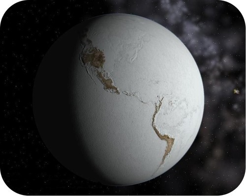
Snowball Earth. During the late Precambrian, Earth grew so cold that it was covered with snow and ice. Earth during this ice age has been called “snowball Earth.”
The dramatic changes of the late Precambrian had a major impact on Earth’s life forms. Living things that could not adapt died out. They were replaced by organisms that evolved new adaptations. These adaptations included sexual reproduction, specialization of cells, and multicellularity.
At the close of the Precambrian 544 million years ago, a mass extinction occurred. In a mass extinction , many or even most species abruptly disappear from Earth. There have been five mass extinctions in Earth’s history. Many scientists think we are currently going through a sixth mass extinction. What caused the Precambrian mass extinction? A combination of climatic and geologic events was probably responsible. No matter what the cause, the extinction paved the way for a burst of new life during the following Paleozoic Era.
The Paleozoic Era is literally the era of “old life.” It lasted from 544 to 245 million years ago and is divided into six periods. Major events in each period of the Paleozoic Era are described in Figure below . The era began with a spectacular burst of new life. This is called the Cambrian explosion. The era ended with the biggest mass extinction the world had ever seen. This is known as the Permian extinction. At the following link, you can watch a video about these and other events of the Paleozoic Era: http://www.youtube.com/watch?v=Bf2rrRmconU .
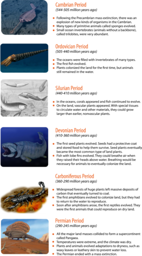
The Paleozoic Era includes the six periods described here.
The Cambrian Period : Following the Precambrian mass extinction, there was an explosion of new kinds of organisms in the Cambrian Period (544–505 million years ago). Many types of primitive animals called sponges evolved. Small ocean invertebrates called Trilobites became abundant.
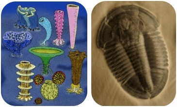
Two representatives of more than fifty modern animal phyla from the Cambrian explosion are reef-building sponges (left) and early arthropods known as trilobites (right). Both were abundant during the Cambrian and later became extinct; however, the phyla they represent persist to this day.
The Ordovician Period : During the next period, the Ordovician Period (505–440 million years ago), the oceans became filled with invertebrates of many types. Also during this period, the first fish evolved and plants colonized the land for the first time. But animals still remained in the water.
The Silurian Period : During the Silurian Period (440–410 million years ago), corals appeared in the oceans, and fish continued to evolve. On land, vascular plants appeared. With special tissues to circulate water and other materials, these plants could grow larger than the earlier nonvascular plants.
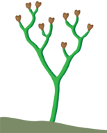
Cooksonia, a branching vascular plant with sporangia at the tips of each branch. Cooksonia fossils measure just centimeters in height and date from the Silurian period.
The Devonian Period : During the Devonian Period (410–360 million years ago), the first seed plants evolved. Seeds have a protective coat and stored food to help them survive. Seed plants eventually became the most common type of land plants. In the oceans, fish with lobe fins evolved. They could breathe air when they raised their heads above water. Breathing would be necessary for animals to eventually colonize the land.
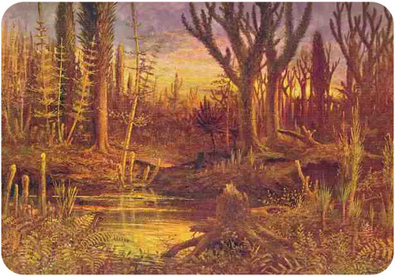
On land, clubmosses, horsetails, and ferns joined primitive seed plants and early trees to form the first forests.
The Carboniferous Period : Next, during the Carboniferous Period (360–290 million years ago), widespread forests of huge plants left massive deposits of carbon that eventually turned to coal. The first amphibians evolved to move out of the water and colonize land, but they had to return to the water to reproduce. Soon after amphibians arose, the first reptiles evolved. They were the first animals that could reproduce on dry land.
The Permian Period : During the Permian Period (290–245 million years ago), all the major land masses collided to form a supercontinent called Pangaea. Temperatures were extreme, and the climate was dry. Plants and animals evolved adaptations to dryness, such as waxy leaves or leathery skin to prevent water loss. The Permian Period ended with a mass extinction.
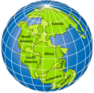
The supercontinent Pangaea encompassed all of today’s continents in a single land mass. This configuration limited shallow coastal areas which harbor marine species, and may have contributed to the dramatic event which ended the Permian - the most massive extinction ever recorded.
In the mass extinction that ended the Permian, the majority of species went extinct. Many hypotheses have been offered to explain why this mass extinction occurred. These include huge meteorites striking Earth and enormous volcanoes spewing ashes and gases into the atmosphere. Both could have darkened the skies with dust for many months. This, in turn, would have shut down photosynthesis and cooled the planet. Despite the great loss of life, there was light at the end of the tunnel. The Permian extinction paved the way for another burst of new life at the start of the following Mesozoic Era. This included the evolution of the dinosaurs.
The Mesozoic Era is literally the era of “middle life.” It is also known as the age of dinosaurs. It lasted from 245 to 65 million years ago and is divided into the three periods described in Figure below . The Mesozoic began with the supercontinent Pangaea. Then, during the era, Pangaea broke up and the continents drifted apart. The movement of continents changed climates. It also caused a lot of volcanic activity. Mass extinctions occurred at the end of the Triassic and Cretaceous Periods. The first extinction paved the way for a dinosaur takeover. In the second extinction, the dinosaurs finally disappeared. At the link below, you can watch a video about these and other exciting events during the age of dinosaurs. http://www.youtube.com/watch?v=watgb11LOHE
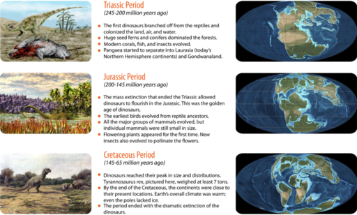
Mesozoic Era. The Mesozoic Era consists of the three periods described here.
The Triassic Period : During the Triassic Period (245–200 million years ago), the first dinosaurs branched off from the reptiles and colonized the land, air, and water. Huge seed ferns and conifers dominated the forests, and modern corals, fish, and insects evolved. The supercontinent Pangaea started to separate into Laurasia (today’s Northern Hemisphere continents) and Gondwanaland (today’s Southern Hemisphere continents). The Triassic Period ended with a mass extinction.
The Jurassic Period : The next period, the Jurassic Period (200–145 million years ago), began after the mass extinction that ended the Triassic Period. This mass extinction allowed dinosaurs to flourish in the Jurassic Period. This was the golden age of dinosaurs. Also during the Jurassic, the earliest birds evolved from reptile ancestors, and all the major groups of mammals evolved, but individual mammals were still small in size. Flowering plants appeared for the first time, and new insects also evolved to pollinate the flowers. The continents continued to move apart, and volcanic activity was especially intense.
The Cretaceous Period : During the Cretaceous Period (145–65 million years ago), dinosaurs reached their peak in size and distribution. Tyrannosaurus Rex , weighed at least 7 tons. By the end of the Cretaceous, the continents were close to their present locations. Earth’s overall climate was warm; even the poles lacked ice. The period ended with the dramatic extinction of the dinosaurs.
What happened to the dinosaurs? Why did they go extinct at the end of the Cretaceous Period? Some scientists think a comet or asteroid may have collided with Earth, causing skies to darken, photosynthesis to shut down, and climates to change. A collision was probably at least a contributing factor. Without the dinosaurs, there were many opportunities for new organisms to exploit in the next era, the Cenozoic. Which living things do you think took over where the dinosaurs left off?
What happened to the dinosaurs? Why did they go extinct at the end of the Cretaceous Period? Some scientists think a comet or asteroid may have collided with Earth, causing skies to darken, photosynthesis to shut down, and climates to change. A collision was probably at least a contributing factor. Without the dinosaurs, there were many opportunities for new organisms to exploit in the next era, the Cenozoic. Which living things do you think took over where the dinosaurs left off?
The Cenozoic Era literally means the era of “modern life.” It is also called the age of mammals. Mammals took advantage of the extinction of the dinosaurs. They flourished and soon became the dominant animals on Earth. You can learn more about the evolution of mammals during the Cenozoic at the link below. The Cenozoic began 65 million years ago and continues to the present. It may be divided into the two periods described in Figure below . http://www.youtube.com/watch?v=H0uTGkCWXwQ
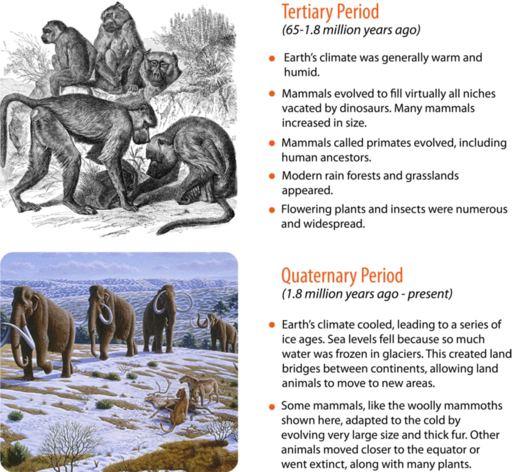
Cenozoic Era. One way of dividing the Cenozoic Era is into the two periods described here.
The Tertiary Period : During the Tertiary Period (65–1.8 million years ago), Earth’s climate was generally warm and humid. Mammals evolved to fill virtually all niches vacated by dinosaurs. Many mammals increased in size. Mammals called primates evolved, including human ancestors. Modern rain forests and grasslands appeared, and flowering plants and insects were numerous and widespread.
The Quaternary Period : During the Quaternary Period (1.8 million years ago–present), Earth’s climate cooled, leading to a series of ice ages. Sea levels fell because so much water was frozen in glaciers. This created land bridges between continents, allowing land animals to move to new areas. Some mammals, like the woolly mammoths adapted to the cold by evolving very large size and thick fur. Other animals moved closer to the equator or went extinct, along with many plants.
The last ice age ended about 12,000 years ago. By that time, our own species, Homo sapiens , had evolved. After that, we were witnesses to the unfolding of life’s story. Although we don’t know all the details of the recent past, it is far less of a mystery than the billions of years that preceded it.
Imagine a vast grassy ecosystem covered with herds of elephants, bison and camels stretching as far as the eye can see. Africa? Maybe. But this also describes Northern California at the end of the last Ice Age. What happened to all this wildlife? Were they over hunted and killed off? Did global warming destroy their populations? Scientists are not sure, but this relatively recent loss of life does raise many interesting questions. See Ice Age Bay Area at http://www.kqed.org/quest/television/ice-age-bay-area2 for additional information.
Click on the image above for more content
1. Describe geologic and climatic changes that occurred during the late Precambrian.
2. What is a mass extinction?
3. What is the relationship between the Precambrian extinction and the Cambrian explosion?
4. List several important evolutionary events that occurred during the Paleozoic Era.
5. Describe how the continents shifted during the Mesozoic Era.
6. What explains why mammals were able to flourish during Cenozoic Era?
7. Create a timeline of major evolutionary events during the Mesozoic and Cenozoic Eras. Include approximate dates in your timeline.
8. Explain the evolutionary advantages of sexual reproduction and multicellularity.
9. Relate the Permian, Triassic, and Cretaceous extinctions to the evolution and extinction of the dinosaurs.
10. Compare and contrast the Tertiary and Quaternary Periods of the Cenozoic Era.
The human species evolved during the Cenozoic Era. The scientific name of the human species is Homo sapiens.
The evolution of life on Earth over the past 4 billion years has resulted in a huge variety of species. For more than 2,000 years, humans have been trying to classify the great diversity of life. The science of classifying organisms is called taxonomy. Classification is an important step in understanding the present diversity and past evolutionary history of life on Earth.
All modern classification systems have their roots in the Linnaean classification system. It was developed by Swedish botanist Carolus Linnaeus in the 1700s. He tried to classify all living things that were known at his time. He grouped together organisms that shared obvious physical traits, such as number of legs or shape of leaves. For his contribution, Linnaeus is known as the “father of taxonomy.” You can learn more about Linnaeus and his system of classification by watching the video at this link: http://teachertube.com/viewVideo.php?video_id=169889 . The Linnaean system of classification consists of a hierarchy of groupings, called taxa (singular, taxon). Taxa range from the kingdom to the species (see Figure below ). The kingdom is the largest and most inclusive grouping. It consists of organisms that share just a few basic similarities. Examples are the plant and animal kingdoms. The species is the smallest and most exclusive grouping. It consists of organisms that are similar enough to produce fertile offspring together. Closely related species are grouped together in a genus.
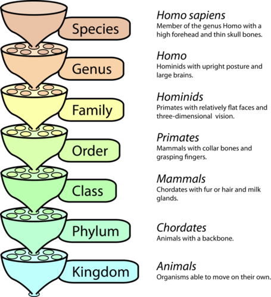
Linnaean Classification System: Classification of the Human Species. This chart shows the taxa of the Linnaean classification system. Each taxon is a subdivision of the taxon below it in the chart. For example, a species is a subdivision of a genus. The classification of humans is given in the chart as an example.
Perhaps the single greatest contribution Linnaeus made to science was his method of naming species. This method, called binomial nomenclature , gives each species a unique, two-word Latin name consisting of the genus name and the species name. An example is Homo sapiens , the two-word Latin name for humans. It literally means “wise human.” This is a reference to our big brains. Why is having two names so important? It is similar to people having a first and a last name. You may know several people with the first name Michael, but adding Michael’s last name usually pins down exactly whom you mean. In the same way, having two names uniquely identifies a species.
Linnaeus published his classification system in the 1700s. Since then, many new species have been discovered. The biochemistry of organisms has also become known. Eventually, scientists realized that Linnaeus’s system of classification needed revision. A major change to the Linnaean system was the addition of a new taxon called the domain. A domain is a taxon that is larger and more inclusive than the kingdom. Most biologists agree there are three domains of life on Earth: Bacteria, Archaea, and Eukaryota (see Figure below ). Both Bacteria and Archaea consist of single-celled prokaryotes. Eukaryota consists of all eukaryotes, from single-celled protists to humans. This domain includes the Animalia (animals), Plantae (plants), Fungi (fungi), and Protista (protists) kingdoms.
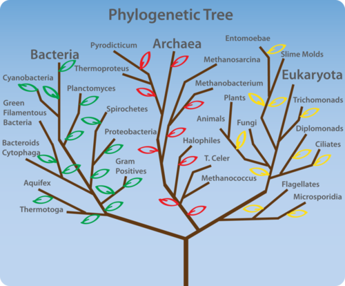
Three-Domain Classification. This diagram shows the three domains of organisms that currently live on Earth.
Linnaeus classified organisms based on obvious physical traits. Basically, organisms were grouped together if they looked alike. After Darwin published his theory of evolution in the 1800s (discussed in the following chapter), scientists looked for a way to classify organisms that showed phylogeny. Phylogeny is the evolutionary history of a group of related organisms. It is represented by a phylogenetic tree , like the one in Figure below .
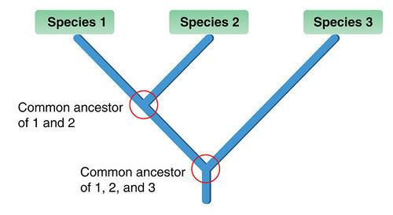
Phylogenetic Tree. This phylogenetic tree shows how three hypothetical species are related to each other through common ancestors. Do you see why Species 1 and 2 are more closely related to each other than either is to Species 3?
One way of classifying organisms that shows phylogeny is by using the clade. A clade is a group of organisms that includes an ancestor and all of its descendants. Clades are based on cladistics. This is a method of comparing traits in related species to determine ancestor-descendant relationships. Clades are represented by cladograms, like the one in Figure below . This cladogram represents the mammal and reptile clades. The reptile clade includes birds. It shows that birds evolved from reptiles. Linnaeus classified mammals, reptiles, and birds in separate classes. This masks their evolutionary relationships.
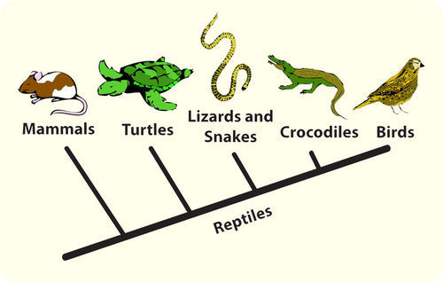
Mammal and Reptile Clades. This cladogram classifies mammals, reptiles, and birds in clades based on their evolutionary relationships.
1. What is taxonomy?
2. Define taxon and give an example.
3. What is binomial nomenclature? Why is it important?
4. What is a domain? What are the three domains of life on Earth?
5. What is cladistics, and what is it used for?
6. Create a taxonomy, modeled on the Linnaean classification system, for a set of common objects, such as motor vehicles, tools, or office supplies. Identify the groupings that correspond to the different taxa in the Linnaean system.
7. Dogs and wolves are more closely related to each other than either is to cats. Draw a phylogenetic tree to show these relationships.
8. Compare and contrast a Linnaean taxon, such as the family or genus, with the clade.
9. Explain why reptiles and birds are placed in the same clade.
This chapter gives you a glimpse of 4 billion years of evolution on Earth. In the next chapter, you will read about the forces that bring about evolution. Natural selection is one of these forces. It generally results in a population or species becoming better adapted to its environment over time.
Opening image copyright Dariush M., 2010. http://www.shutterstock.com . Used under license from Shutterstock.com.
{kind=link}
{kind=link}
{kind=link}
{kind=link}
%20http://en.wikipedia.org/wiki/File:Archaeocyatha.jpg;%20(right)%20http://commons.wikimedia.org/wiki/File:Asaphiscus_Wheeleri_3.jpg){kind=link}
{kind=link}
{kind=link}
{kind=link}
{kind=link}